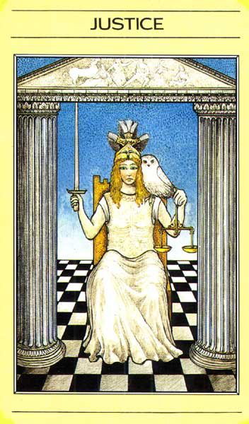

То что арканы Сила и Правосудие поменяны местами, я заметила, интересно укзнать почему так.
детали на карте (таро Уэйта):
Женщина сидящая на троне между колоннами. Карта перекликается с императором - трон,т.е Власть, Закон. И с арканом Жрица - колонны и зановеска заней. В Жрице занавеска и колонны символизировали дверь в мир безсознательного, в Справделтвости кмк- путь в Мир там где есть правила, заповеди, законы...
На одной карте женщина восседает на троне, в руках ее меч, а рядом люлька с ребенком. Вспомниласьь притча про царя Соломона, когда к нему пришли две женщины с просьбой рассудить чей ребенок, Соломон предложил разрубить ребенка пополам, одна женщина решила выйти из спора, лишь бы ребенок остался жив, Соломон принял решение отдать ребенка именно этой женщине, так как понял, что ребенко ее.
Мифическое таро.
Афина восседает на троне, в ее руках меч, на ее плече белая сова, символ мудрости. Афина богиня войны, но в отличии от Марса (Ареса) не стремилась к яростным кровопролитным битвам, а придерживалась стратегии, мудрости, организованных
детали на карте
Кроули:
вместо двух сфинксов, на карте 4 ангела в виде льва, орла, человека и тельца (привет их иерофанта), но у них части перепутаны. Глядя на картинку, возникает десткое желание сделать правильно )))
В руках у него что-то похожее на рулетку :) , возвожно это колесо Фортуны.
др. карты:
на одних картах присутсвует огонь, на других вода, а на некоторых и то и то - одновременно. Возможно это привет Марсу, как управителю Овна (огонь) и Скорпиона (вода)
цвет: красный (огонь борьба, решимость, смелость), синий (далекая перспектива, путь), сине-зеленый(вода, эмоции)
фигура:
символ:
значок Марса например. Тут чусвуется импульс (стрелочка), но есть что иньское (кружочек), там где накапливается энергия.
буква:
ощущения
заряженный пистолет, который может выстрелить (как только- как надо). умение управлять своими эмоциями (колесницей). Умение вообще чем-то управлять. Достижение поставленных целей. Ощущение как будто перед забегом н аОлимпиаде, надо выложиться, вложить максимум, и победа будет твоя!
ключевые слова:
ярость
запах:
чабрец, мята перечная (9 мечей, 2 декан Близнецов), лайм (янский запах), чтобы простимулировать себя к действию, гвоздика, настойка стручкового перца, запах костра
звук:
ну тут звуки с поля боя. военный горн какой-нибудь.
вкус:
гвоздики
астрология:
Марс (Овен, Скорпион)
мифология:
герои-победители-триумфаторы:
Александр Македонский
можно вспомнить миф о Фаэтоне, которые решил взять колесницу отца Гелиоса.
Фразы: Сквозь теринии к звездам
способности: концентрироваться перд чем-то важным
окружение: пружина, меч
амулеты: Спротсмены одевают на олимпиаду, вспомнился один такой, который одевал материнский платок под футболку.
любое оружие